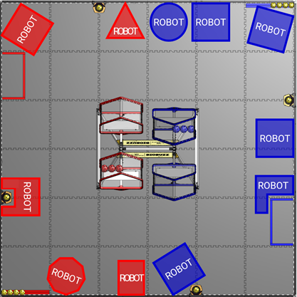
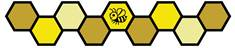

G101 *Humains, restez hors du FIELD pendant le MATCH. Un membre de l’équipe ne peut pas pénétrer sur le FIELD pendant un MATCH.
Infraction : VERBAL WARNING.
Cette règle vise à ce que les membres de l’équipe restent à l’extérieur du périmètre du FIELD pendant un MATCH et n’influent pas sur le MATCH, sauf dans les cas autorisés par la section 11.4.6 Humains. Un membre de l’équipe qui pose le pied sur le FIELD ou qui se penche au-dessus du FIELD avec une grande partie de son corps enfreint cette règle.
Un membre de l’équipe qui tend le bras, fait des signes ou se penche par-dessus la paroi du périmètre du FIELD sans influer sur le MATCH n’enfreint pas la règle.
G102 *Soyez prudents avec les éléments de l’ARENA. Il est interdit à un membre de l’équipe d’effectuer les actions suivantes sur les éléments de l’ARENA :
A. y grimper,
B. s’y suspendre,
C. les manipuler de telle sorte qu’ils ne reprennent pas leur forme d’origine sans intervention humaine, et
D. les endommager.
Infraction : VERBAL WARNING.
Les membres de la DRIVE TEAM peuvent prendre appui sur le périmètre du FIELD à tout moment du MATCH. Déplacer le périmètre du FIELD de sa position est considéré comme une infraction à G102.C.
G201 *Soyez une personne bienveillante. Toutes les équipes doivent faire preuve de civilité envers chacun et respecter le matériel des équipes et de l’événement lors d’un événement FIRST Tech Challenge. Pour plus d’informations, veuillez consulter le Code de conduite (Code of Conduct) FIRST, les valeurs fondamentales (Core Values) et le reste de la section 1.4.2 Cadre de comportement.
Infraction : VERBAL WARNING. YELLOW CARD en cas de nouvelle infraction au cours de l’événement.
Un comportement particulièrement méprisable peut entraîner l’expulsion de l’ARENA pour les individus, la disqualification pour les équipes, et peut faire l’objet d’une escalade supplémentaire, comme décrit dans les lignes directrices d’escalade (Escalation Guidelines).
G202 *Respectez le Contrat d’intégrité de la compétition (CIC). En jouant à BIOBUZZ, les équipes doivent respecter les règles et le Contrat d’intégrité de la compétition (CIC) décrit dans la section 1.5 Contrat d’intégrité de la compétition (CIC) pendant chaque MATCH.
Exemples de comportements qui enfreindraient cette règle (liste non exhaustive) :
A. enfreindre délibérément l’esprit des règles,
B. perdre volontairement des MATCHES, manquer délibérément des RP ou jouer en deçà de ses capacités afin de manipuler le classement,
C. demander à d’autres équipes de perdre volontairement des MATCHES, de manquer délibérément des RP ou de jouer en deçà de leurs capacités afin de manipuler le classement,
D. demander à des équipes de ne pas se présenter à leur MATCH,
E. distraire, perturber et/ou provoquer les adversaires, ou
F. perturber le fonctionnement de l’ARENA.
Infraction : VERBAL WARNING. YELLOW ou RED CARD en cas de nouvelle infraction au cours de l’événement.
Ces règles n’ont pas pour but d’empêcher une ALLIANCE qui entend jouer le jeu et respecter les règles de planifier et/ou d’appliquer, lors de MATCHES précis, des stratégies dans lesquelles les équipes jouent des rôles spécifiques et éventuellement non conventionnels qui contribuent au succès de leur ALLIANCE.
Jouer avec intégrité est une exigence chez FIRST ; les YELLOW ou RED CARDS seront attribués à la discrétion du Head REFEREE en fonction de la gravité de l’infraction et de son impact sur le MATCH.
G203 *Présentez-vous à vos MATCHES. Si un ROBOT a réussi l’inspection initiale complète, au moins 1 membre de sa DRIVE TEAM doit se présenter à l’ARENA et participer à chacun des MATCHES de qualification qui lui sont attribués.
Infraction : DISQUALIFIED pour le MATCH en cours.
L’équipe devrait informer le responsable de la file d’attente (Lead Queuer) si son ROBOT n’est pas en mesure de participer.
Si des circonstances exceptionnelles empêchent au moins 1 membre d’une équipe d’assister à chacun de ses MATCHES, cette équipe devrait voir avec le FIELD STAFF si un aménagement est possible.
G204 *Ne cherchez pas à tirer profit du tort causé aux autres. Les actions visant manifestement à forcer l’ALLIANCE adverse à enfreindre une règle ne sont pas conformes à l’esprit de FIRST Tech Challenge et ne sont pas autorisées. Les infractions ainsi provoquées n’entraîneront aucune pénalité pour l’ALLIANCE visée.
Infraction : MAJOR FOUL par occurrence. MAJOR FOUL par occurrence et YELLOW CARD par MATCH si REPEATED. L’ALLIANCE contrainte d’enfreindre une règle n’est pas pénalisée.
Cette règle ne s’applique pas aux stratégies conformes au déroulement normal du jeu.
Cette règle suppose un acte délibéré laissant à l’équipe qui le subit peu ou pas de possibilité d’éviter la pénalité, par exemple :
A. un ROBOT de l’ALLIANCE rouge percute délibérément un ROBOT de l’ALLIANCE bleue aligné pour marquer du NECTAR dans une FLOWER alors qu’il reste 65 secondes de MATCH, ce qui lui fait lâcher le NECTAR dans la FLOWER trop tôt, en infraction à G410.
B. un ROBOT de l’ALLIANCE rouge traverse la LOADING ZONE bleue pendant qu’un membre de la DRIVE TEAM bleue introduit du NECTAR sur le FIELD, déviant le NECTAR bleu avant qu’il ne touche la TILE de la LOADING ZONE, en infraction à G427.
G205 *Infractions graves ou exceptionnelles. Tout comportement grave allant au-delà de ce qui est énuméré dans les règles, ou toute nouvelle infraction à une règle ou à une procédure au cours de l’événement, est interdit.
Outre les infractions aux règles explicitement énumérées dans ce manuel et constatées par un REFEREE, le Head REFEREE peut attribuer un YELLOW ou un RED CARD pour des actions graves d’un ROBOT ou un comportement grave d’un membre de l’équipe à tout moment de l’événement.
Les infractions persistantes seront portées à l’attention du siège de FIRST. Le siège de FIRST travaillera avec le personnel de l’événement pour déterminer si une escalade supplémentaire est nécessaire, ce qui peut aller jusqu’à l’exclusion de la course aux prix et l’exclusion de l’événement.
Enfreindre délibérément une règle parce que le bénéfice de l’infraction l’emporte sur la pénalité n’est pas conforme à l’esprit de FIRST et constitue un exemple de comportement grave. C’est le cas, par exemple, d’infractions multiples à des règles sans mécanisme d’escalade, commises parce que le bénéfice cumulé l’emporte sur la pénalité cumulée. Enfreindre une règle qui n’entraîne qu’un YELLOW CARD lors de ce qui pourrait être le dernier MATCH d’une ALLIANCE avant la remise à zéro des cartons conformément à la section 10.6.1 YELLOW et RED CARDS, ou avant la fin d’un événement (p. ex. le dernier MATCH de qualification d’une équipe, un MATCH du tableau inférieur), fera l’objet d’un examen renforcé et entraînera probablement un RED CARD.
Pour plus de détails, veuillez consulter la section 10.6.1 YELLOW et RED CARDS.
Infraction : YELLOW ou RED CARD.
Cette règle a pour objectif de donner aux Head REFEREES la souplesse nécessaire pour assurer le bon déroulement de l’événement, tout en faisant de la sécurité de tous les participants la priorité absolue.
Le Head REFEREE peut attribuer un YELLOW ou un RED CARD pour une seule occurrence d’une infraction ou pour plusieurs occurrences d’une même infraction. Les équipes doivent savoir que toute règle de ce manuel peut donner lieu à un YELLOW ou un RED CARD. Le Head REFEREE a le dernier mot sur toutes les règles et infractions lors d’un événement.
G301 *Ne retardez pas les MATCHES. Les membres de la DRIVE TEAM ne peuvent pas retarder de manière significative le début de leur MATCH. Les deux conditions suivantes doivent être remplies avant que les actions de l’équipe ne soient prises en compte :
A. l’heure de début prévue du MATCH est dépassée, et
B. la DRIVE TEAM a accès à l’ARENA.
Pour qu’une équipe soit considérée comme causant un retard significatif, le Head REFEREE doit estimer que l’équipe n’est ni prête pour le MATCH (G303), ni en train de faire un effort de bonne foi pour l’être rapidement.
Pendant les MATCHES de qualification, l’heure de début prévue du MATCH est l’heure indiquée dans le programme des MATCHES ou environ 3 minutes après la fin du MATCH précédent sur le même FIELD, selon ce qui est le plus tardif.
Pendant les MATCHES éliminatoires, l’heure de début prévue du MATCH est l’heure indiquée dans le programme des MATCHES ou 8 minutes après le MATCH précédent de l’une ou l’autre ALLIANCE, selon ce qui est le plus tardif.
Lors de MATCHES consécutifs, T406 s’applique et les équipes peuvent bénéficier d’une pause minimale plus longue.
Les équipes dont 1 membre de la DRIVE TEAM est présent et qui ont informé le FIELD STAFF que leur ROBOT ne participera pas au MATCH sont considérées comme prêtes pour le MATCH et n’enfreignent pas cette règle.
Infraction : VERBAL WARNING. MAJOR FOUL pour le MATCH suivant en cas de nouvelle infraction au cours de la même phase du tournoi. Lors d’un MATCH éliminatoire, le VERBAL WARNING est adressé à toute l’ALLIANCE.
Si l’équipe/l’ALLIANCE n’est pas prête pour le MATCH dans les 2 minutes suivant le VERBAL WARNING/la MAJOR FOUL, et que le Head REFEREE ne constate aucun effort de bonne foi de la ou des DRIVE TEAM(S) pour être rapidement prête(s), le ROBOT de l’équipe fautive est DISABLED.
Cette règle a pour objectif d’accorder aux deux ALLIANCES un temps équitable pour se préparer à chaque MATCH et de faire preuve d’indulgence envers les DRIVE TEAMS retardées par des circonstances exceptionnelles. Les équipes devraient éviter de perturber le fonctionnement de l’ARENA et informer de manière proactive le Head REFEREE et le FIELD STAFF de leur situation.
Le FIELD STAFF fera un effort de bonne foi pour attendre les équipes absentes ou non préparées et évitera de lancer un MATCH lorsque des équipes ne sont pas présentes, ou ne sont pas prêtes pour le MATCH tout en faisant un effort de bonne foi pour l’être.
Dès qu’un VERBAL WARNING/une MAJOR FOUL est attribué(e), le Head REFEREE lance un chronomètre de 2 minutes et fait un effort de bonne foi pour informer la DRIVE TEAM retardataire du temps restant.
En général, les efforts de bonne foi pour être rapidement prêt pour le MATCH visent uniquement à mettre le ROBOT en état de jouer le MATCH (c.-à-d. pas à modifier de manière significative les capacités d’un ROBOT). Exemples d’efforts de bonne foi pour être rapidement prêt pour le MATCH qui ne constitueraient pas une infraction (liste non exhaustive) :
A. se diriger prudemment vers le FIELD avec un ROBOT que l’équipe n’est pas en train de modifier,
B. effectuer des réparations rapides, p. ex. avec du ruban adhésif ou des colliers de serrage, pour rendre le ROBOT conforme aux exigences de STARTING CONFIGURATION,
C. attendre le démarrage d’un appareil de la DRIVER STATION,
D. travailler activement avec le personnel technique du terrain, y compris le FTA, pour résoudre un problème dans un délai raisonnable, ou
E. effectuer un « test de mouvement » MOMENTARY pour vérifier la communication entre la DRIVER STATION et le ROBOT CONTROLLER. Le ROBOT ne devrait pas se déplacer ni interagir avec des SCORING ELEMENTS (sauf contact avec le POLLEN préchargé) pendant ce test.
G302 *Limitez ce que vous apportez sur le FIELD. Les objets apportés sur le FIELD pour être utilisés pendant un MATCH, en plus du ROBOT et de l’OPERATOR CONSOLE, doivent tenir dans l’ALLIANCE AREA attribuée à l’équipe, être portés ou tenus par des membres de la DRIVE TEAM, ou être un objet utilisé à titre d’aménagement (p. ex. béquilles, coussins, tapis pour s’agenouiller ou tabourets à une marche d’une hauteur maximale de 12 po (30.5 cm), conçus pour qu’on se tienne debout dessus et bloqués de façon à ne pas rouler/se replier).
Que l’équipement réponde ou non aux critères ci-dessus, il ne peut pas :
A. être utilisé d’une manière qui perturbe le fonctionnement normal de l’ARENA ou crée un danger,
B. dépasser de plus de 6 pi 6 po (~198 cm) au-dessus des TILES,
C. communiquer avec quoi que ce soit ou qui que ce soit à l’extérieur de l’ARENA, à l’exception du matériel médicalement nécessaire,
D. masquer la vue du FIELD STAFF ou du public, ou
E. brouiller ou perturber les capacités de détection à distance d’une autre équipe.
Des exceptions à G302.B sont accordées pour les dépassements MOMENTARY au-delà de 6 pi 6 po et pour les personnes portant des EPI ou des accessoires décoratifs raisonnables tels que chapeaux, bandeaux, etc.
Infraction : le MATCH ne commencera pas tant que la situation n’est pas corrigée. VERBAL WARNING si l’objet est découvert ou utilisé de manière inappropriée pendant un MATCH. YELLOW CARD en cas de nouvelle infraction au cours de l’événement.
Apporter sur le FIELD un dispositif d’alignement pour faciliter la mise en place et l’alignement du ROBOT avant le MATCH n’enfreint pas cette règle. L’utilisation d’un dispositif d’alignement ne devrait pas retarder le début du MATCH en infraction à G301.
Exemples d’équipements pouvant être considérés comme dangereux dans l’espace restreint de l’ALLIANCE AREA (liste non exhaustive) : une échelle ou un grand dispositif de signalisation.
L’utilisation d’un objet dont les communications sans fil sont désactivées est conforme à G302.C ci-dessus.
Exemples de brouillage ou de perturbation des capacités de détection à distance (liste non exhaustive) : imiter les AprilTags du FIELD et projeter un éclairage intense ou des pointeurs laser sur le FIELD pendant un MATCH.
G303 *Les ROBOTS sur le FIELD doivent être prêts à jouer un MATCH. Un ROBOT doit satisfaire à toutes les exigences suivantes pour le début du MATCH :
A. ne présente aucun danger pour les personnes, les éléments de l’ARENA ou les autres ROBOTS,
B. satisfait à toutes les exigences de la section 3.3 Règles d’admissibilité aux MATCHES, y compris celles relatives à l’inspection/la nouvelle inspection,
C. est le seul objet fourni par l’équipe laissé sur le FIELD, et
D. porte des ROBOT SIGNS indiquant la bonne couleur d’ALLIANCE (voir R402).
Infraction : le MATCH ne commencera pas tant que toutes les exigences ne sont pas satisfaites, si une solution rapide existe. DISABLED s’il n’existe pas de solution rapide et, à la discrétion du Head REFEREE, le ROBOT doit faire l’objet d’une nouvelle inspection. RED CARD si le ROBOT d’une équipe non conforme à G303.B participe au MATCH.
Pour évaluer bon nombre des points énumérés ci-dessus, le Head REFEREE consultera probablement le LRI.
G304 *Les ROBOTS doivent être correctement placés sur le FIELD. Un ROBOT doit être positionné sur le FIELD de manière à satisfaire à toutes les exigences suivantes :
A. être entièrement contenu du côté du FIELD de sa propre ALLIANCE (colonnes A, B, C du FIELD pour le rouge, ou colonnes D, E, F du FIELD pour le bleu) (Figure 9‑4),
B. ne pas être fixé à un élément du FIELD, ni emmêlé avec celui-ci, ni suspendu à celui-ci,
C. toucher la paroi du périmètre du FIELD,
D. ne pas toucher une FLOWER ni se trouver dans son volume de marquage,
E. ne pas se trouver dans la LOADING ZONE,
F. être limité à sa STARTING CONFIGURATION (voir R102 et R103),
G. être en contact avec exactement 4 POLLEN préchargés, comme décrit à la section 10.3.1 SCORING ELEMENTS, entièrement contenus du côté du FIELD de sa propre ALLIANCE, et
H. être totalement immobile une fois l’initialisation de l’OpMode terminée,
Infraction : le MATCH ne commencera pas tant que toutes les exigences ne sont pas satisfaites, si une solution rapide existe. DISABLED ou retiré du FIELD s’il n’existe pas de solution rapide.
G304.A exige que le ROBOT soit entièrement contenu à l’intérieur du périmètre du FIELD et ne dépasse pas de la paroi du périmètre du FIELD.
Chaque ROBOT doit commencer en contact avec 4 POLLEN de préchargement (pre-load) situés dans ou sur le ROBOT, ou sur les TILES en contact avec le ROBOT. Ces POLLEN de préchargement sont attribués spécifiquement à raison de 4 par équipe, comme décrit à la section 10.3.1 SCORING ELEMENTS. Les ROBOTS peuvent toucher d’autres POLLEN disposés sur le FIELD, mais ceux-ci ne comptent pas pour l’exigence de préchargement. Pour les ROBOTS absents de leur MATCH, le POLLEN est placé dans la LOADING ZONE contre la paroi du périmètre.
La Figure 11‑1 montre plusieurs exemples de positions de départ autorisées pour le ROBOT.
Figure 11‑1 : Exemples de positions de départ autorisées pour le ROBOT

G305 *Les équipes doivent sélectionner un OpMode. Un OpMode doit être sélectionné dans l’application DRIVER STATION et initialisé en appuyant sur le bouton INIT. S’il s’agit d’un OpMode AUTO, le minuteur AUTO de 30 secondes doit être activé.
Infraction : le MATCH ne commencera pas tant que la situation n’est pas corrigée. DISABLED si le ROBOT ne parvient pas à initialiser un OpMode ou si la situation ne peut pas être corrigée rapidement.
Cette règle impose à toutes les équipes de sélectionner et d’initialiser (INIT) un OpMode, qu’elles prévoient ou non d’utiliser un OpMode AUTO pendant l’AUTO. Le FIELD STAFF s’en sert pour savoir qu’une équipe est prête à commencer le MATCH.
Les équipes qui n’ont pas d’OpMode AUTO devraient envisager de créer un OpMode AUTO par défaut à partir de l’exemple BasicOpMode et d’utiliser la fonction de chargement automatique pour mettre automatiquement en file leur OpMode TELEOP.
Les règles de cette section portent sur le jeu une fois le MATCH commencé.
L’AUTO correspond aux 30 premières secondes du MATCH, pendant lesquelles les DRIVERS ne peuvent pas transmettre de commandes à leurs ROBOTS ; les ROBOTS fonctionnent donc uniquement selon leurs instructions préprogrammées. Les règles de cette section s’appliquent uniquement pendant la période AUTO.
G401 *N’interagissez pas avec un ROBOT pendant l’AUTO. Dès le début du compte à rebours de départ du MATCH et jusqu’à la fin de l’AUTO, les membres de la DRIVE TEAM ne peuvent pas interagir directement ou indirectement avec un ROBOT ou une OPERATOR CONSOLE, sauf dans les cas suivants :
A. pour appuyer sur le bouton de démarrage (▶) dans une marge MOMENTARY autour du début du MATCH,
B. pour appuyer sur le bouton d’arrêt (■) à la discrétion de l’équipe, ou
C. pour la sécurité des personnes ou de l’OPERATOR CONSOLE.
Infraction : VERBAL WARNING. MAJOR FOUL et YELLOW CARD par MATCH, si STRATEGIC.
Les équipes ne sont pas obligées de démarrer un OpMode si elles choisissent de ne pas exécuter d’OpMode AUTO.
G401.A vise à ce que les équipes démarrent l’AUTO à l’heure, en tenant compte d’une certaine variabilité due aux facteurs humains.
G402 Aucune interférence avec l’adversaire pendant l’AUTO. Pendant l’AUTO, une équipe ne peut pas perturber l’AUTO de l’ALLIANCE adverse.
Infraction : MAJOR FOUL par MATCH. MAJOR FOUL et YELLOW CARD par MATCH, si STRATEGIC.
Pendant l’AUTO, les colonnes A, B, C du FIELD constituent le côté rouge du FIELD et les colonnes D, E, F (Figure 9‑5) le côté bleu du FIELD. Chaque ALLIANCE est prioritaire sur le FIELD et les SCORING ELEMENTS situés de son côté du FIELD.
S’aventurer du côté du FIELD de l’ALLIANCE adverse pendant l’AUTO est une stratégie de jeu risquée qui peut être considérée comme STRATEGIC.
Exemples d’actions considérées comme une perturbation de l’AUTO (liste non exhaustive) :
A. exercer le CONTROL de SCORING ELEMENTS situés du côté du FIELD de l’ALLIANCE adverse, et
B. toucher un ROBOT adverse de son côté du FIELD.
Les SCORING ELEMENTS qui passent de l’autre côté du FIELD après avoir été déviés par un autre objet du FIELD (p. ex. un élément du FIELD, un ROBOT) ne seront probablement pas pénalisés.
G403 *Les ROBOTS sont immobiles entre l’AUTO et le TELEOP. Tout mouvement motorisé du ROBOT ou de l’un de ses MECHANISMS est interdit pendant la période de transition entre l’AUTO et le TELEOP.
Infraction : VERBAL WARNING. MAJOR FOUL et YELLOW CARD par MATCH, si STRATEGIC.
Un mouvement dû à l’inertie, à la gravité, à la mise hors tension des actionneurs, etc. n’est pas considéré comme un mouvement motorisé.
Pendant la période de transition entre l’AUTO et le TELEOP, les équipes peuvent appuyer sur des boutons de leur application DRIVER STATION pour arrêter l’OpMode AUTO, ou pour initialiser ou démarrer un OpMode TELEOP. Si la phase INIT de l’OpMode amène le ROBOT à enfreindre cette règle (alimentation d’actionneurs provoquant le moindre mouvement ou soubresaut), l’équipe devrait attendre le début du TELEOP avant d’appuyer sur INIT.
G404 *Les ROBOTS sont immobiles à la fin du TELEOP. Les ROBOTS ne doivent plus avoir de mouvement motorisé après la fin du TELEOP, jusqu’à ce que le Head REFEREE ou la personne qu’il désigne signale que les équipes peuvent récupérer leurs ROBOTS.
Infraction : VERBAL WARNING. MAJOR FOUL et YELLOW CARD par MATCH, si STRATEGIC.
Les DRIVE TEAMS devraient montrer clairement que les ROBOTS ne sont plus commandés, en appuyant sur le bouton d’arrêt (■) de l’application DRIVER STATION ou en cessant toute commande du ROBOT à la fin de la période du MATCH et en posant leurs manettes.
Un mouvement dû à l’inertie, à la gravité, à la mise hors tension des actionneurs, etc. n’est pas considéré comme un mouvement motorisé.
G405 *Gardez les SCORING ELEMENTS dans les limites du terrain. Un ROBOT ne peut pas éjecter délibérément un SCORING ELEMENT hors du FIELD (que ce soit directement ou en le faisant rebondir sur un élément du FIELD ou sur un autre ROBOT).
Infraction : MAJOR FOUL par SCORING ELEMENT.
Les SCORING ELEMENTS qui quittent le FIELD lors de tentatives de marquage ou à la suite d’interactions entre ROBOTS ne sont pas considérés comme des éjections délibérées et n’enfreignent pas cette règle.
G406 *N’endommagez pas l’ARENA et n’y semez pas le désordre. Ni un ROBOT ni un membre de la DRIVE TEAM ne peuvent semer le désordre dans l’ARENA ou en endommager une partie.
Infraction : VERBAL WARNING. MAJOR FOUL et YELLOW CARD par MATCH, si STRATEGIC. DISABLED si le dommage est causé par un ROBOT et que le Head REFEREE estime que d’autres dommages sont probables.
Des mesures correctives (p. ex. suppression des arêtes vives, retrait du MECHANISM à l’origine des dommages et/ou nouvelle inspection) peuvent être exigées avant que le ROBOT puisse participer aux MATCHES suivants.
Cette règle vise les membres de la DRIVE TEAM et les ROBOTS qui affectent négativement l’ARENA, y compris les éléments du FIELD et les SCORING ELEMENTS, d’une manière qui nécessiterait des réparations importantes ou un nettoyage conséquent perturbant le fonctionnement de l’ARENA. La règle R201 décrit des exemples de caractéristiques du ROBOT liées à cette règle qui sont examinées lors de l’inspection.
Les SCORING ELEMENTS sont censés subir une usure raisonnable lorsqu’ils sont manipulés par des ROBOTS et des humains, comme des rayures, des marques et, à terme, des dommages dus à la fatigue. Entailler, arracher des morceaux ou marquer systématiquement des SCORING ELEMENTS constitue une infraction à cette règle.
G407 Pas plus de 4 à la fois. Un ROBOT ne peut pas exercer simultanément le CONTROL de plus de 4 SCORING ELEMENTS.
Infraction : VERBAL WARNING. MAJOR FOUL et YELLOW CARD par MATCH, si STRATEGIC.
Cette règle vise à ce que les ROBOTS jouent les MATCHES en n’exerçant le CONTROL que de 4 SCORING ELEMENTS au maximum à la fois.
Les ROBOTS qui exercent le CONTROL de 5 SCORING ELEMENTS ou plus à un moment quelconque du MATCH feront l’objet d’un examen pour déterminer si l’action est STRATEGIC.
Exemples d’actions susceptibles d’être considérées comme STRATEGIC (liste non exhaustive) :
A. Un ROBOT ramasse 6 SCORING ELEMENTS ou plus, en exerce le CONTROL et les déplace vers un emplacement de marquage.
B. Plusieurs cas, au cours d’un MATCH, de CONTROL plus que MOMENTARY de 5 SCORING ELEMENTS ou plus par un ROBOT.
Exemples d’actions non susceptibles d’être considérées comme STRATEGIC (liste non exhaustive) :
C. Un ROBOT exerce un CONTROL MOMENTARY de 5 SCORING ELEMENTS, puis « inverse » rapidement l’action de sorte qu’au moins un SCORING ELEMENT revienne à peu près à son état initial.
Les équipes sont encouragées à concevoir leurs ROBOTS de façon à empêcher le CONTROL involontaire ou délibéré de plus de 4 SCORING ELEMENTS. Cela peut passer par des protections empêchant les SCORING ELEMENTS de se coincer accidentellement sur le dessus du ROBOT et par des systèmes empêchant le ramassage/l’aspiration actif de plus de 4 SCORING ELEMENTS.
Des cas REPEATED de CONTROL de 5 SCORING ELEMENTS ou plus par un ROBOT sont susceptibles d’être considérés comme STRATEGIC, même si le ROBOT dispose d’un mécanisme de tri « en garder 4 et rejeter le reste ».
Exemples d’interactions avec un SCORING ELEMENT qui ne constituent pas un « CONTROL » et n’enfreignent pas cette règle (liste non exhaustive) :
D. le « bulldozing » (contact involontaire avec un SCORING ELEMENT se trouvant sur la trajectoire du ROBOT qui se déplace sur le FIELD)
E. la « déviation » (être touché par un SCORING ELEMENT qui rebondit contre ou sur un ROBOT), ou
F. les SCORING ELEMENTS ayant fait l’objet d’un LAUNCH par un ROBOT et qui ne sont plus en contact avec celui-ci.
G408 N’exercez pas le CONTROL du NECTAR adverse. Un ROBOT ne peut pas exercer le CONTROL du NECTAR de l’adversaire.
Infraction : VERBAL WARNING. YELLOW CARD par MATCH, si STRATEGIC.
Des cas REPEATED de CONTROL du NECTAR adverse par un ROBOT sont susceptibles d’être considérés comme STRATEGIC, même si le ROBOT dispose d’un mécanisme de tri qui rejette automatiquement le NECTAR adverse en le ramenant à peu près à son état initial.
G409 Ne rattrapez pas les SCORING ELEMENTS. Un ROBOT ne peut pas rattraper ni dévier un SCORING ELEMENT libéré par une HIVE TIPPED tant que ce SCORING ELEMENT n’a pas touché autre chose que ce ROBOT.
Infraction : VERBAL WARNING. YELLOW CARD par MATCH, si STRATEGIC.
Cette règle vise à ce que le POLLEN et le NECTAR qui s’échappent d’une HIVE TIPPED touchent le sol en TILES avant d’être ramassés par un ROBOT. Elle n’a pas pour but de pénaliser les ROBOTS qui rattrapent accidentellement des SCORING ELEMENTS parce qu’ils se trouvent sous une HIVE en train de basculer (TIP).
Les équipes sont encouragées à concevoir leurs ROBOTS de façon qu’ils ne puissent pas rattraper accidentellement des SCORING ELEMENTS. Cela peut passer par des protections empêchant les SCORING ELEMENTS de se coincer accidentellement sur le dessus du ROBOT. De telles caractéristiques montreront plus clairement aux REFEREES que l’équipe n’utilise pas le rattrapage comme stratégie et lui éviteront d’être jugée en infraction à cette règle.
Exemples d’actions susceptibles d’être considérées comme STRATEGIC (liste non exhaustive) :
A. Un ROBOT s’arrête de manière REPEATED sous la HIVE en attendant qu’un TIP se produise pour ramasser les SCORING ELEMENTS qui tombent.
B. Un ROBOT dispose, sur sa partie supérieure, d’un MECHANISM qui s’ouvre largement pour recevoir des SCORING ELEMENTS, et l’utilise pour rattraper des SCORING ELEMENTS qui tombent lorsqu’il passe sous la HIVE.
C. Un ROBOT se positionne de manière REPEATED de sorte que plusieurs SCORING ELEMENTS tombant de la HIVE le heurtent et repartent dans une direction avantageuse avant de toucher quoi que ce soit d’autre.
Exemples d’actions non susceptibles d’être considérées comme STRATEGIC (liste non exhaustive) :
D. Un ROBOT passe sous la HIVE et un ou deux POLLEN atterrissent sur une surface plane du ROBOT pendant son passage.
E. Un ROBOT qui ne fonctionne plus reste immobile sous la HIVE et des SCORING ELEMENTS s’accumulent sur sa partie supérieure.
G410 Le NECTAR ne va dans les FLOWERS qu’à partir de la dernière minute. Les ROBOTS ne peuvent pas introduire de NECTAR dans le volume de marquage d’une FLOWER avant les 60 dernières secondes du MATCH.
Infraction : MAJOR FOUL par NECTAR.
Voir la section 10.5.2 Critères d’attribution des points – FLOWER pour plus de détails sur le volume de marquage de la FLOWER.
L’affichage principal du chronomètre du FIELD sert de repère pour indiquer qu’il reste 60 secondes de MATCH.
Les équipes sont encouragées à montrer de façon claire et sans ambiguïté aux REFEREES qu’elles ne placent pas de NECTAR dans une FLOWER trop tôt.
G411 *N’accaparez pas les SCORING ELEMENTS. Une ALLIANCE ne peut pas empêcher de manière STRATEGIC l’ALLIANCE adverse d’accéder aux SCORING ELEMENTS.
Infraction : MAJOR FOUL et YELLOW CARD par MATCH.
Une ALLIANCE qui utilise son propre NECTAR et/ou POLLEN pour marquer n’enfreint pas cette règle.
Regrouper les SCORING ELEMENTS utiles dans une partie restreinte du FIELD et/ou positionner activement un ROBOT pour en empêcher l’accès à l’ALLIANCE adverse constitue une infraction à cette règle. Un GARDEN n’est pas une zone protégée.
G412 *Les ROBOTS doivent rester sous contrôle. Un ROBOT ne doit pas présenter de danger excessif pour une personne ou un élément de l’ARENA pendant un MATCH, de l’une des manières suivantes :
A. le ROBOT ou tout ce dont il exerce le CONTROL, c.-à-d. un SCORING ELEMENT, perturbe quoi que ce soit à l’extérieur du FIELD ou touche une personne se trouvant à l’extérieur du FIELD, ou
B. le fonctionnement du ROBOT est dangereux.
Infraction : DISABLED et VERBAL WARNING. DISABLED et YELLOW CARD par MATCH en cas de nouvelle infraction au cours de l’événement.
Soyez attentifs aux REFEREES et aux autres membres du FIELD STAFF qui travaillent autour de l’ARENA et peuvent se trouver à proximité immédiate de votre ROBOT.
Exemples d’infractions (liste non exhaustive) :
A. s’agiter de manière incontrôlée à l’extérieur du FIELD,
B. renverser un support de DRIVER STATION,
C. déplacer/endommager l’affichage du chronomètre du FIELD, ou
D. toucher un membre du FIELD STAFF ou de la DRIVE TEAM à l’extérieur du FIELD.
Le contact d’un ROBOT avec des éléments de l’ARENA situés à l’extérieur du FIELD, comme un support de DRIVER STATION, le sol à l’extérieur du FIELD ou la paroi du périmètre du FIELD côté extérieur, n’enfreint pas cette règle.
G413 *Les ROBOTS doivent s’arrêter sur instruction. Si un REFEREE demande à une équipe de désactiver (DISABLE) son ROBOT conformément à T402, un membre de la DRIVE TEAM doit appuyer sur le bouton d’arrêt ( ■ ) de l’application DRIVER STATION et poser ses manettes.
Infraction : VERBAL WARNING. RED CARD, si STRATEGIC.
G414 *Les ROBOTS doivent être identifiables. Le numéro d’équipe et la couleur d’ALLIANCE d’un ROBOT ne doivent pas devenir indiscernables, selon l’appréciation du Head REFEREE.
Infraction : VERBAL WARNING. YELLOW CARD, si STRATEGIC.
Les équipes sont encouragées à fixer solidement leurs ROBOT SIGNS sur leur ROBOT, à des endroits bien visibles, de façon qu’ils ne tombent pas facilement et ne soient pas masqués pendant le jeu normal.
Des mesures correctives, comme la modification des ROBOT SIGNS, peuvent être demandées avant que le ROBOT participe à un MATCH suivant.
G415 *Attention à vos interactions avec l’ARENA. Il est interdit à un ROBOT d’avoir les interactions suivantes avec un élément de l’ARENA, à l’exception des SCORING ELEMENTS :
A. le saisir,
B. l’agripper,
C. s’y fixer,
D. s’y emmêler, ou
E. s’y suspendre.
Infraction : VERBAL WARNING. YELLOW CARD par MATCH, si STRATEGIC. DISABLED si le Head REFEREE estime qu’un dommage est probable.
Des mesures correctives (p. ex. retrait du MECHANISM en cause et/ou nouvelle inspection) peuvent être exigées avant que le ROBOT soit autorisé à participer aux MATCHES suivants.
Les ROBOTS de forme concave qui entourent partiellement une FLOWER, par exemple pour faciliter l’alignement, n’enfreignent pas cette règle.
G416 Les ROBOTS ont des limites de construction. Les ROBOTS ne peuvent pas dépasser les limites définies dans R105 pendant le MATCH. Les ROBOTS ne peuvent pas :
A. se déployer au point de dépasser les limites d’extension indiquées dans R105.A ou R105.B, ou
B. détacher délibérément des pièces, conformément à R105.C.
Infraction : VERBAL WARNING. MAJOR FOUL par occurrence, si STRATEGIC.
Un ROBOT peut avoir des pièces qui bougent après le début d’un MATCH et dépassent de sa STARTING CONFIGURATION, mais ces extensions doivent rester dans la limite d’extension et ne pas détacher délibérément de COMPONENTS, comme décrit dans R105.
G417 Les ROBOTS ne peuvent pas interférer avec la structure de la HIVE. Les ROBOTS ne peuvent pas influer sur le mouvement de la HIVE autrement qu’en effectuant un LAUNCH de SCORING ELEMENTS dans une CELL orientée vers le haut.
Infraction : VERBAL WARNING. MAJOR FOUL et YELLOW CARD par MATCH, si STRATEGIC.
Les HIVES sont conçues pour que le TIP ne soit provoqué que par le LAUNCH de POLLEN et de NECTAR dans une CELL orientée vers le haut. Toute autre interaction avec la HIVE qui provoque ou pourrait provoquer un TIP, ou qui l’entrave, constitue une infraction à cette règle.
Exemples d’actions de ROBOT susceptibles d’être considérées comme STRATEGIC (liste non exhaustive) :
A. percuter le cadre de la HIVE à grande vitesse,
B. percuter le cadre de la HIVE plusieurs fois en peu de temps,
C. effectuer délibérément un LAUNCH de NECTAR ou de POLLEN sur les faces extérieures inférieure, latérales ou supérieure d’une CELL,
D. entraver le TIP de la HIVE adverse en effectuant un LAUNCH de NECTAR ou de POLLEN sur celle-ci,
E. toucher une HIVE directement ou indirectement par l’intermédiaire d’un SCORING ELEMENT dont le ROBOT exerce le CONTROL, ou
F. des actions REPEATED après un avertissement.
Exemples d’actions non susceptibles d’être considérées comme STRATEGIC (liste non exhaustive) :
G. un ROBOT heurte accidentellement le cadre d’une HIVE en tentant de ramasser du POLLEN, ou
H. un ROBOT tente d’effectuer un LAUNCH de POLLEN ou de NECTAR dans la CELL orientée vers le haut et la manque, touchant le dessous, les côtés ou le dessus de la CELL.
G418 Les ROBOTS ne peuvent pas interférer avec les FLOWERS. Les ROBOTS ne peuvent pas introduire de SCORING ELEMENTS dans une FLOWER ni en retirer, sauf pour :
A. introduire du POLLEN et du NECTAR uniquement par le haut d’une FLOWER, et
B. retirer du POLLEN uniquement par le bas d’une FLOWER.
Infraction : VERBAL WARNING. MAJOR FOUL et YELLOW CARD par MATCH, si STRATEGIC.
Les FLOWERS sont conçues pour que le POLLEN et le NECTAR ne puissent entrer que par le haut de l’anneau supérieur et que seul le POLLEN (pas le NECTAR) puisse être retiré par le bas de l’anneau central. Toute autre action visant à marquer ou à retirer des SCORING ELEMENTS de la FLOWER est considérée comme une infraction à cette règle.
Il ne s’agit pas d’interdire aux ROBOTS de toucher la FLOWER ni les interactions qui se produisent lors de tentatives de marquage autorisées.
Exemples d’actions de ROBOT qui n’enfreignent pas cette règle :
A. toucher la FLOWER en tentant d’introduire ou de retirer des SCORING ELEMENTS,
B. toucher du POLLEN ou du NECTAR marqué dans une FLOWER en tentant de marquer, ou
C. heurter une FLOWER en roulant et toucher le POLLEN ou le NECTAR qui s’y trouve.
Exemples d’actions susceptibles d’être considérées comme STRATEGIC (liste non exhaustive) :
D. Un ROBOT tente de tirer du POLLEN à travers le côté de la FLOWER,
E. Un ROBOT agrippe la FLOWER et la secoue,
F. Un ROBOT fait sortir de force du NECTAR de l’anneau central à l’aide d’un MECHANISM,
G. Un ROBOT percute délibérément la paroi du périmètre à grande vitesse, ce qui fait tomber un SCORING ELEMENT d’une FLOWER, ou
H. Un ROBOT maintient délibérément un NECTAR contre le côté des tubes de la FLOWER de sorte qu’il satisfasse aux critères de marquage de la FLOWER.
Exemples d’actions non susceptibles d’être considérées comme STRATEGIC (liste non exhaustive) :
I. Un ROBOT heurte une FLOWER en tentant de ramasser du POLLEN sur les TILES et fait tomber un POLLEN par le haut d’une FLOWER, ou
J. Un ROBOT fait tomber un POLLEN marqué en tentant de marquer un autre POLLEN.
Remarque : G419 et G420 s’excluent mutuellement. Une même interaction entre ROBOTS qui enfreint plus d’une de ces règles entraîne la pénalité la plus sévère, et uniquement celle-ci.
G419 *N’endommagez pas un ROBOT adverse. Un ROBOT ne peut pas endommager un ROBOT adverse ni altérer son fonctionnement.
Infraction : VERBAL WARNING. MAJOR FOUL et YELLOW CARD par occurrence, si STRATEGIC. MAJOR FOUL et RED CARD par occurrence si STRATEGIC et si le ROBOT adverse ne peut plus se déplacer.
BIOBUZZ est un jeu très interactif qui peut comporter des phases défensives et de nombreux contacts. Si cette règle empêche les équipes d’endommager leurs adversaires de manière STRATEGIC et vise à limiter les dommages graves aux ROBOTS, les équipes devraient néanmoins concevoir des ROBOTS robustes.
L’endommagement ou l’altération du fonctionnement de COMPONENTS ou de MECHANISMS exposés ou non protégés au cours du jeu normal ne sera probablement pas considéré comme une infraction à cette règle. Cela comprend notamment :
A. un interrupteur d’alimentation principal exposé ou non protégé (voir R603),
B. un câblage exposé ou non protégé, ou
C. un MECHANISM de construction fragile (p. ex. un système d’aspiration).
Lorsque le ROBOT d’une équipe interagit avec un ROBOT adverse se trouvant dans une position précaire ou défavorable, cette équipe devrait montrer de façon claire et sans ambiguïté qu’elle cherche à éviter d’endommager son adversaire.
Exemples d’actions susceptibles d’être considérées comme STRATEGIC (liste non exhaustive) :
D. Un ROBOT percute à grande vitesse et/ou heurte violemment de manière REPEATED un ROBOT adverse et l’endommage.
Exemples d’altération du fonctionnement d’un autre ROBOT (liste non exhaustive) :
E. débrancher des fils à l’intérieur du CHASSIS du ROBOT nécessaires au fonctionnement d’un COMPONENT,
F. débrancher la batterie du ROBOT adverse (c’est aussi un exemple de ROBOT qui ne peut plus se déplacer), ou
G. mettre hors tension le ROBOT adverse en touchant son interrupteur d’alimentation raisonnablement bien protégé. (C’est aussi un exemple de ROBOT qui ne peut plus se déplacer.)
À la fin du MATCH, le Head REFEREE peut choisir d’inspecter visuellement un ROBOT pour confirmer les infractions à cette règle commises pendant un MATCH, et annuler l’infraction si le dommage ne peut pas être vérifié.
« Ne peut plus se déplacer » signifie qu’en raison de l’incident, le DRIVER n’est plus en mesure (en règle générale) de conduire le ROBOT vers l’emplacement voulu dans un délai raisonnable. Par exemple, si un ROBOT ne peut que tourner en rond ou ne peut avancer qu’extrêmement lentement, il est considéré comme ne pouvant plus se déplacer.
G420 *Ne faites pas basculer et n’emmêlez pas. Un ROBOT ne peut pas s’accrocher à un ROBOT adverse, le renverser ou s’emmêler avec lui.
Infraction : VERBAL WARNING. MAJOR FOUL et YELLOW CARD par occurrence, si STRATEGIC. MAJOR FOUL et RED CARD par occurrence, si STRATEGIC et soit CONTINUOUS, soit si le ROBOT adverse ne peut plus se déplacer.
L’accrochage à des COMPONENTS ou MECHANISMS exposés ou non protégés, ou l’emmêlement avec ceux-ci, au cours du jeu normal ne sera probablement pas considéré comme une infraction à cette règle. Cela comprend notamment :
A. un câblage exposé ou non protégé, ou
B. un MECHANISM de construction fragile (p. ex. un système d’aspiration).
Exemples d’actions susceptibles d’être considérées comme STRATEGIC (liste non exhaustive) :
C. utiliser un MECHANISM en forme de coin pour renverser un ROBOT adverse,
D. établir un contact châssis contre châssis avec un ROBOT adverse qui tente de se redresser après être tombé, et le faire tomber de nouveau, ou
E. faire basculer un ROBOT adverse en le touchant après qu’il a commencé à basculer si, selon le REFEREE, ce contact aurait pu être évité.
Un basculement qui est la conséquence involontaire d’une interaction normale entre ROBOTS, y compris un choc unique châssis contre châssis qui fait basculer un ROBOT, selon l’appréciation du REFEREE, ne constitue pas une infraction STRATEGIC à cette règle.
« Ne peut plus se déplacer » signifie qu’en raison de l’incident, le DRIVER n’est plus en mesure (en règle générale) de conduire le ROBOT vers l’emplacement voulu dans un délai raisonnable. Par exemple, si un ROBOT ne peut que tourner en rond ou ne peut avancer qu’extrêmement lentement, il est considéré comme ne pouvant plus se déplacer.
G421 *Le PIN est limité à un compte de 3. Un ROBOT ne peut pas effectuer un PIN sur un ROBOT adverse pendant plus de 3 secondes. Un ROBOT effectue un PIN s’il empêche le mouvement d’un ROBOT adverse par contact, direct ou indirect (p. ex. contre un élément du FIELD). Le décompte du PIN prend fin dès que l’un des critères suivants est rempli :
A. les ROBOTS se sont éloignés d’au moins 2 pi (~61 cm) l’un de l’autre pendant plus de 3 secondes,
B. l’un des ROBOTS s’est éloigné de 2 pi de l’endroit où le PIN a commencé pendant plus de 3 secondes, ou
C. le ROBOT qui effectue le PIN subit lui-même un PIN.
Pour le critère G421.A, le décompte du PIN est suspendu dès que les ROBOTS sont séparés de 2 pi, jusqu’à ce que le PIN prenne fin ou que le ROBOT qui effectue le PIN revienne à moins de 2 pi, auquel cas le décompte reprend.
Pour le critère G421.B, le décompte du PIN est suspendu dès que l’un des ROBOTS s’est éloigné de 2 pi de l’endroit où le PIN a commencé, jusqu’à ce que le PIN prenne fin ou que les deux ROBOTS reviennent à moins de 2 pi, auquel cas le décompte reprend.
Infraction : MAJOR FOUL par occurrence et une MAJOR FOUL supplémentaire pour chaque période de 3 secondes pendant laquelle la situation n’est pas corrigée.
G422 *La DRIVE TEAM reste dans l’ALLIANCE AREA. Une fois le MATCH commencé, les membres de la DRIVE TEAM ne peuvent pas quitter l’ALLIANCE AREA qui leur est attribuée.
Infraction : VERBAL WARNING. MINOR FOUL par occurrence, si STRATEGIC.
Cette règle a pour objectif d’empêcher les membres de la DRIVE TEAM de quitter l’ALLIANCE AREA qui leur est attribuée pendant un MATCH afin d’obtenir un avantage concurrentiel, par exemple en se déplaçant vers une autre partie du FIELD pour mieux voir ou en tendant le bras dans le FIELD. Le simple fait de franchir le plan de l’AREA pendant le jeu normal ne constitue pas une infraction.
Les DRIVE TEAMS peuvent se trouver n’importe où dans leur ALLIANCE AREA pendant un MATCH. Les membres de la DRIVE TEAM peuvent récupérer le NECTAR de leur propre ALLIANCE sorti du FIELD s’ils peuvent l’atteindre sans quitter l’ALLIANCE AREA.
Des exceptions sont accordées pour des raisons de sécurité.
G423 *DRIVE COACHES et autres équipes : ne touchez pas aux commandes. Une fois le MATCH commencé, les DRIVE COACHES ou les membres d’une autre équipe ne peuvent pas manipuler les manettes de l’OPERATOR CONSOLE.
Infraction : VERBAL WARNING. MAJOR FOUL et YELLOW CARD par MATCH, si STRATEGIC.
La pénalité est appliquée à l’équipe à laquelle appartient le membre de la DRIVE TEAM qui enfreint la règle.
Si une équipe fait face à des circonstances exceptionnelles en raison d’un empêchement majeur (p. ex. fêtes religieuses, examens importants, problèmes de transport), elle devrait voir avec le FIELD STAFF si un aménagement est possible.
Les DRIVE COACHES peuvent, s’ils le souhaitent, aider les DRIVERS de la manière suivante :
A. tenir l’appareil de la DRIVER STATION,
B. dépanner l’appareil de la DRIVER STATION,
C. sélectionner des OpModes dans l’application DRIVER STATION,
D. appuyer sur le bouton INIT de l’application DRIVER STATION,
E. appuyer sur le bouton de démarrage (▶) de l’application DRIVER STATION, ou
F. appuyer sur le bouton d’arrêt (■) de l’application DRIVER STATION.
G424 *DRIVE COACHES, les SCORING ELEMENTS vous sont interdits. Les DRIVE COACHES ne peuvent pas toucher les SCORING ELEMENTS, sauf pour des raisons de sécurité.
Infraction : VERBAL WARNING. MINOR FOUL par occurrence, si STRATEGIC.
G425 *DRIVE TEAMS, attention à votre portée. Une fois le MATCH commencé, un membre de la DRIVE TEAM ne peut pas, directement ou indirectement :
A. toucher un ROBOT,
B. toucher un SCORING ELEMENT en contact avec un ROBOT ou une TILE,
C. perturber le marquage des SCORING ELEMENTS, ou
D. toucher un élément du FIELD.
Infraction : VERBAL WARNING. MAJOR FOUL et YELLOW CARD par MATCH, si STRATEGIC.
Les manettes tenues à la main, les câbles qui pendent, les vêtements et les autres objets présents dans l’ALLIANCE AREA peuvent tous amener des membres de la DRIVE TEAM à toucher indirectement un ROBOT, ce qui constituerait une infraction à cette règle.
Des exceptions sont accordées pour des raisons de sécurité.
Pour G425.A et G425.B, la pénalité est appliquée à l’équipe à laquelle appartient le membre de la DRIVE TEAM, que le contact soit initié par le membre de la DRIVE TEAM ou par le ROBOT.
Perturber le marquage comprend notamment :
A. empêcher un ROBOT de marquer dans une FLOWER, ou
B. frapper ou secouer délibérément la paroi du périmètre pour faire sortir du NECTAR ou du POLLEN de la FLOWER.
G426 Les humains ne peuvent pas introduire de NECTAR sur le FIELD trop tôt. Les membres de la DRIVE TEAM ne peuvent pas introduire de NECTAR sur le FIELD, sauf :
A. chaque fois que la HIVE de la couleur de leur ALLIANCE est TIPPED, un NECTAR supplémentaire peut être introduit pour cette ALLIANCE, ou
B. lorsqu’il reste 60 secondes de MATCH ou moins, tout le NECTAR restant peut être introduit
selon ce qui survient en premier.
Infraction : MINOR FOUL par NECTAR.
Le chronomètre principal du FIELD sert de repère pour indiquer qu’il reste 60 secondes de MATCH.
Le NECTAR qui quitte le FIELD peut y être réintroduit à tout moment, comme décrit dans G427.
Les DRIVE TEAMS sont encouragées à veiller à ce que le NECTAR restant dans leur ALLIANCE AREA soit visible et à montrer de façon claire et sans ambiguïté aux REFEREES qu’elles n’introduisent pas de NECTAR trop tôt.
Il n’est pas obligatoire d’introduire le NECTAR sur le FIELD immédiatement après le TIP d’une HIVE.
G427 Humains, n’introduisez le NECTAR que par la LOADING ZONE. Le NECTAR ne peut être introduit sur le FIELD que dans les conditions suivantes :
A. sans utiliser d’outil,
B. par un membre de la DRIVE TEAM de l’ALLIANCE de la couleur correspondante, et
C. de sorte que le NECTAR touche la TILE de la LOADING ZONE avant de toucher un ROBOT ou un élément du FIELD.
Infraction : MINOR FOUL par NECTAR.
Cette règle a pour objectif de n’autoriser les membres de la DRIVE TEAM qu’à introduire leur propre NECTAR dans la LOADING ZONE. Même si les restrictions sur la manière de le faire sont limitées, les équipes ne devraient pas chercher à repousser les limites de cette règle pour obtenir un avantage concurrentiel.
Il n’est jamais permis à des humains de marquer dans une HIVE ou une FLOWER ; cela relève des infractions à G202.
Si des membres de la DRIVE TEAM entrent en possession de POLLEN ou de NECTAR de l’ALLIANCE adverse sorti du FIELD, ils devraient le remettre au membre du FIELD STAFF le plus proche pour qu’il soit réintroduit sur le FIELD conformément à la section 10.8 Autres aspects logistiques.
Remarque : lorsqu’ils introduisent du NECTAR, les membres de la DRIVE TEAM doivent éviter de toucher un SCORING ELEMENT également en contact avec une TILE, afin de ne pas enfreindre G425.
G428 Humains, ne retirez pas de SCORING ELEMENTS du FIELD. Les membres de la DRIVE TEAM ne peuvent pas retirer de SCORING ELEMENTS du FIELD.
Infraction : MINOR FOUL par SCORING ELEMENT.
Un SCORING ELEMENT est considéré comme étant sur le FIELD s’il touche une TILE, ou s’il se trouve dans et/ou sur un ROBOT, un élément du FIELD ou un SCORING ELEMENT.
